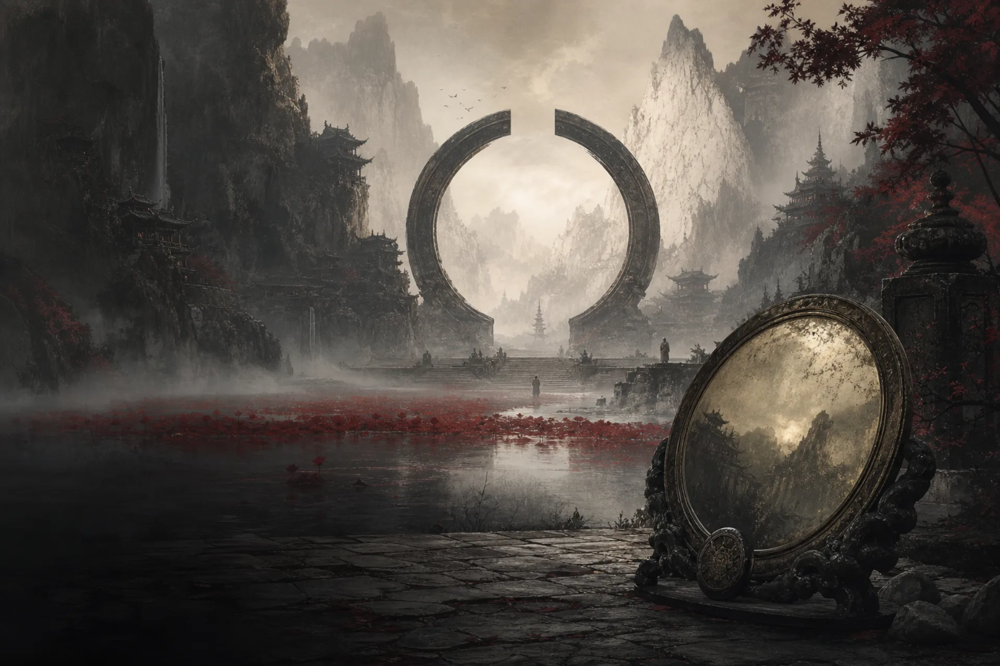

宗门系统让角色拥有一份真正会影响成长与战斗的师承。
首批开放 红尘剑宗、天衍圣地、无相禅宗、幽都。四宗拥有各自的山门舆图、入门演出、六卷心法、专属神通、战斗资源和两条道途。加入之后，你需要同时经营宗门身份与个人构筑：完成事务积累贡献，晋升弟子位阶，研习心法，并在境界提升后逐层参悟道途。

宗门成长由哪些部分组成
弟子身份
宗门身份依次为：
- 记名弟子
- 外门弟子
- 内门弟子
- 真传弟子
晋升会检查境界、贡献、任务完成情况与对应试炼。外门、内门、真传的最低境界分别为炼气、筑基与金丹；达到境界只是资格之一，宗门生活中的实际积累同样重要。
身份还会限制心法上限：
| 身份 | 心法等级上限 |
|---|---|
| 记名弟子 | 45 |
| 外门弟子 | 90 |
| 内门弟子 | 135 |
| 真传弟子 | 180 |
实际可研习等级还会同时受到当前境界与藏经设施等级限制，最终取三者中的最低值。
六卷心法
每个宗门固定拥有六卷心法。第一卷是宗门总纲，负责限制其余分卷的研习上限；其他五卷提供逐级属性成长，并在特定等级解锁宗门神通。
宗门心法覆盖 1 至 180 级。研习消耗修为与灵石，单级成本会随目标等级逐步上升。心法不是单纯的技能前置，它还会长期塑造角色的攻击、防御、身法、命中、控制或资源属性。
专属神通与四槽装配
每宗都有一门不消耗法力的默认式，以及多门由心法解锁的主动神通。角色只能装配四门已解锁的主动神通，且不能重复。
这意味着“学会什么”与“带什么出战”是两层选择。天衍圣地尤其强调这一点：门人可以兼修五行，却无法把所有五行术式和内景法一并带入战斗，必须围绕预期反应安排四槽。
专属战斗资源
- 红尘剑宗 — 剑意（上限 6）：由剑式、连击、闪避反击或护盾承伤积累，用于《此剑平生》收束。
- 天衍圣地 — 衍数（上限 3）：由五行反应与部分秘法积累，三数成图后触发河图周天或洛书断局。
- 无相禅宗 — 心念（上限 6）：在佛相行动与承受代价中积累，用于进入魔相或显化无相。
- 幽都 — 魂火（上限 3）：在蚀魂、忘川与控制交互中取得；魂火满时强化下一次符合条件的魂伤并全部消耗。
双道途与六层参悟
每个宗门提供两条道途。道途从筑基中期开始开放，共有第一层至第五层和终式六层，并按境界顺序解锁：
| 层级 | 境界要求 | 修为 | 灵石 | 道心感悟 |
|---|---|---|---|---|
| 第一层 | 筑基中期 | 5,000 | 25,000 | 100 |
| 第二层 | 金丹圆满 | 20,000 | 100,000 | 100 |
| 第三层 | 化神中期 | 80,000 | 400,000 | 100 |
| 第四层 | 炼虚圆满 | 320,000 | 1,600,000 | 100 |
| 第五层 | 大乘中期 | 1,280,000 | 6,400,000 | 100 |
| 终式 | 渡劫圆满 | 5,120,000 | 25,600,000 | 100 |
每层包含多个参悟节点，当前开放第一套参悟方案。节点首次保存后锁定；已经解锁但尚未选择节点的层级可以稍后补选，暂不支持替换、移除或重置。
两个已经习得的道途可以随时免费切换。切换会同时改变神通机制、战斗资源的使用方式和自动战术，而不是只替换一项属性加成。
宗门事务、贡献与设施
宗门事务包括日常、周常、清扫山门、巡视矿场、宗门小比与悬赏等不同类型。领取前可以查看任务类型与说明；正式领取时，系统会根据周期、身份和境界生成执行要求、难度与奖励，领取后不能刷新。
任务可能要求战斗、巡视，也可能要求交付符合品质、类型、品相或部位条件的丹药、法宝与材料。完成后可获得修为、灵石与宗门贡献；常规任务不直接奖励道心感悟。
贡献既是身份晋升的积累，也是宗门宝库中的兑换凭据。随着身份与设施开放，你还可以使用宗门闭关、炼丹、炼器、矿场、药田等能力。藏经设施会影响心法上限，其他设施则可能影响闭关收益或宗门内炼制成本。
首批宗门资料
本页依据《宗门》资料片开发版本整理。具体数值、开放条件与奖励，以正式上线后的游戏内说明为准。